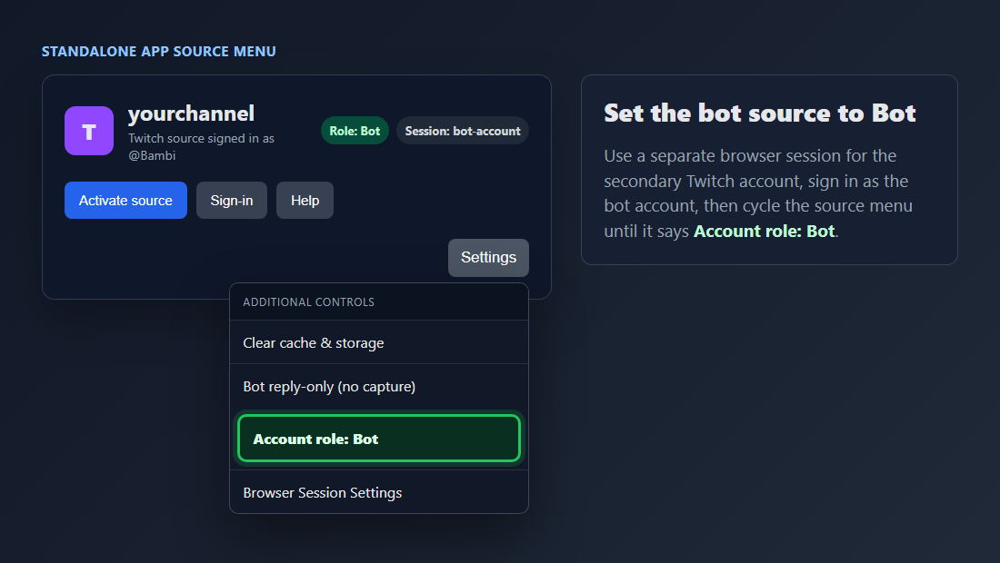
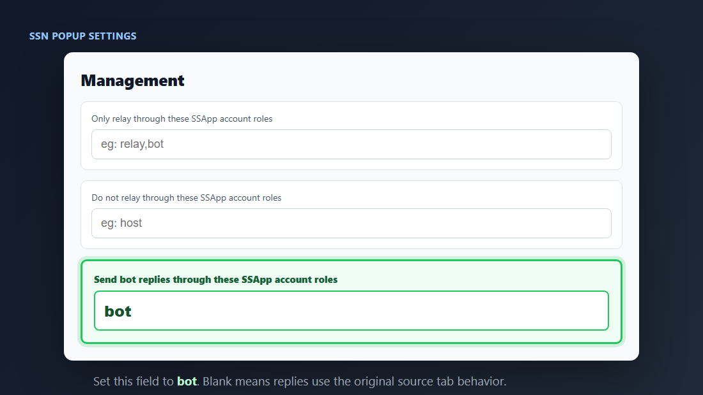

What This Solves
By default, AI chatbot replies go back through the Twitch source that received the message. If that source is signed in as the broadcaster, the reply appears from the broadcaster account.
This setup routes bot and auto-reply output through a separate Twitch source that is signed in as the bot account.
Important: This workflow uses the standalone app source account roles. The browser extension does not have the same per-source account role controls.
Quick Setup
- Open the Social Stream Ninja standalone app.
- Add your normal Twitch source for the channel. This source can capture chat as usual.
- Add the same Twitch source a second time. If the app asks whether to add it as a reply-only bot source, choose yes.
- Sign into that second source as the secondary Twitch bot account.
- In the source settings menu, confirm it says Account role: Bot.
- In the SSN popup settings, set Send bot replies through these SSApp account roles to
bot. - Enable and configure the LLM AI chat bot as usual.
How It Works
Main Twitch Source
Captures the channel chat and feeds messages into SSN.
Bot Twitch Source
Uses its own browser session, is signed in as the bot account, and is marked with the bot account role.
Bot Reply Routing
The botreplyaccountroles setting tells SSN to send chatbot output through sources with the matching account role.
Viewer asks in Twitch: normal Twitch source captures the message.
LLM creates a reply: SSN marks the outgoing message as a chatbot reply.
SSN routes the reply: only the Twitch source with account role bot sends it.
Set The Source Role
Open the source settings menu for the secondary Twitch source. Cycle Account role until it says Bot.

The bot source should use its own browser session and show Role: Bot. The duplicate-source shortcut can also set Bot reply-only and Session: bot-account for you.
Route Bot Replies
In the SSN popup, open the management/relay settings and set Send bot replies through these SSApp account roles to bot.

Leave this field blank only if you want replies to use the original source tab behavior.
Manual Setup If The Prompt Does Not Appear
- Add the second Twitch source manually.
- Open its settings menu and choose Browser Session Settings.
- Create or select a separate session, such as
bot-account. - Use the source sign-in button and log into Twitch as the bot account.
- Set Account role to Bot.
- Optionally enable Bot reply-only (no capture) so the bot source only sends replies.
Checklist
- The bot account is signed into the bot source, not the broadcaster source.
- The bot source says Role: Bot.
- The bot source uses a separate browser session from the broadcaster source.
botreplyaccountrolesis set tobot.- The bot account is allowed to chat in the channel.
- The LLM chat bot is enabled and not set to overlay-only mode if you want messages sent to Twitch chat.
Troubleshooting
- Replies still come from the broadcaster: confirm the second source is signed in as the bot account and its account role is
bot. - No reply is sent: confirm the bot source is active, the bot account can chat, and
botreplyaccountrolesis exactlybot. - The bot source captures duplicate messages: enable Bot reply-only (no capture) on the bot source.
- The wrong account keeps opening: move the bot source to a separate browser session such as
bot-account, then sign in again. - Testing is confusing: temporarily set a simple auto-reply command first, then test the LLM chatbot after routing is confirmed.